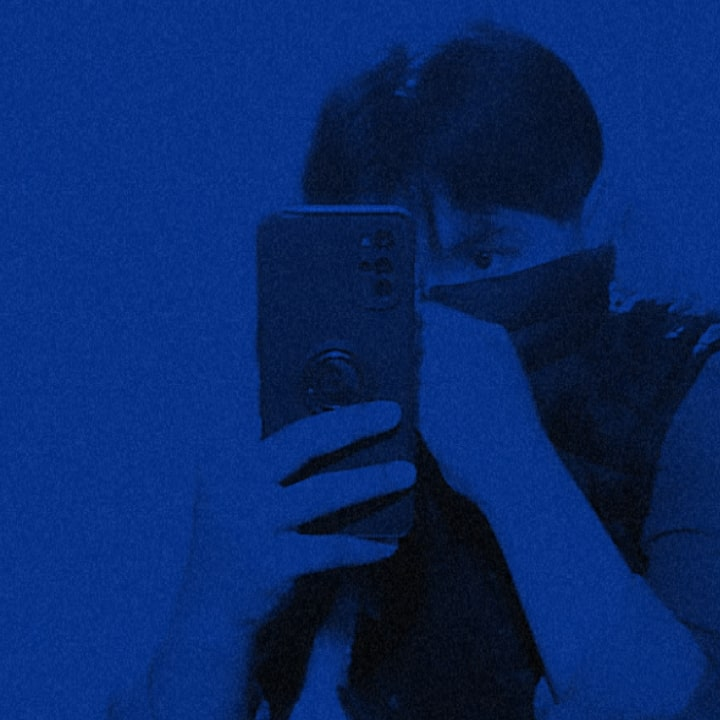

<center><table border="0" align= "center" width="60%" heigth="90px" sytle = font-size:60%>
<tr><td><center></center></td>

<head><title>Leccion ConstruyeT.html</title></head> 

<tr><td><center><h1><font size="2"><font face="Comic Sans MS"><font color="black"><div align="justify"><center>Colegio de Estudios Cientificos y Tecniologicos del Estado de Mexico.     
Modulo 3: submodulo 2 y submodulo 3.</center></div align</del></u></p></font size></font color></font face></center></h1>
<h1><font size="2"><font face="Comic Sans MS"><font color="black"><div align="justify"><center>Nombres del Alumno:Samuel Angelino Garcia      
</center></div align></del></u></p></font size></font color></font face></center></h1>
<p><font color="black" size="3" face="tohoma"><center><strong>Elaborado por:</strong> Samuel Angelino Garcia.
<strong>Grupo:</strong>402  <strong>  Numero de lista:4</strong><br>
<strong>Ciclo Escolar:</strong>2024-2024<strong></center></td>
<br>


<tr>
<td><center><strong>Introducción</strong><h1><font size="3"><font face="Arial"><font color="black"><p style="text-align:justify">
Un prejuicio es una opinion que emitimos generalmente de manera negativa, se forma sin motivo y sin el conocimiento cabal de cierta situacion, contexto o forma de ser de una persona. Este tipo de actitudes pueden suceder cotidianamente en la escuela, los estudiantes pueden actuar o tomar decisiones a partir de prejuicios; por lo anterior, es necesario su guia como profesor para que sepan distinguir entre lo que es y lo que no es un prejuicio. En la presente leccion se profundizara sobre prejuicios y empatia.</del></u></p></font size></font color></font face></center></h1></td>

<tr>
<td colspan="3" bgcolor="blue"><center><strong>¿Tengo prejuicios?</strong>
<tr>
<td colspan="3"><center></center></td>
<tr>

<tr>
<td><center><strong>Descripcion</strong><h1><font size="3"><font face="Arial"><font color="black"><p style="text-align:justify">Entre la sociedad tenemos muchos prejuicios en los cuales juzgamos sin conocer alas demás personas y hablamos por hablar nos burlamos de ellas y en ocasiones tenemos miedo a acércanos a algunos de ellos porque nos dejamos llevar por las apariencias en las cuales creemos que por la forma en la que se ven las personas creemos que son solo porque algunos lo son no quiere decir que son iguales o tiene que ser igual. Juzgamos sin conocer a la persona...A mí me paso por que en la secundaria conocía a una persona la cual por no tener los mismos justos que los demás chavos de su edad lo veíamos mal pero un día un maestro me puso con él a hacer un trabajo con él y entonces empezamos a hablar y era una persona super chida desde entonces aprendí que no debemos juzgar a los demás sin antes conocer. Y en la cual en nuestra sociedad juzgamos y decimos cosas que en lugar de ayudar y apoyar a las personas que son excluidas por la sociedad y acercarnos a ellos muchas veces con comentarios hacia ellos le creamos miedos les bajamos su autoestima y causamos en ocasiones hasta la muerte porque cada ser humano cada persona tiene algo que lo hace único y diferente a todos los demás.
</div align></del></u></p></font size></font color></font face></center></h1></td>


<tr>
<td colspan="3"><center></center></td>
<tr>
<td><center>
"<footer>
  <p>&copy; 2024  Samuel Angelino Garcia </p>
  <ul>
    <li><a href="/acerca-de"> >>"No se npermite la reproduccion de este documento"<< </a></li>
    <li><a href="/conectar">Autor: Samuel Angelino Garcia</a></li>
  </ul>
</footer>"</center>
</center></table></br></td>